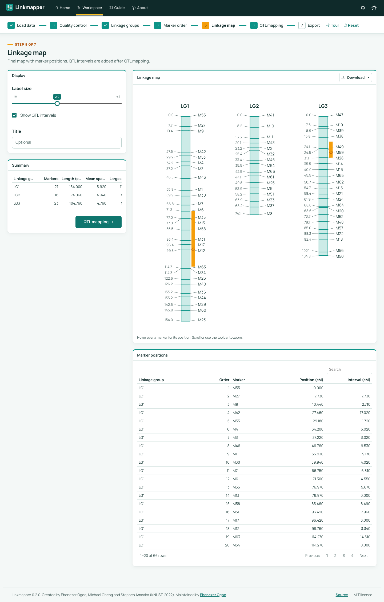

Linkmapper builds genetic linkage maps and locates QTL in F2 intercross, backcross and recombinant inbred line populations, without code. It is a point-and-click interface to onemap and R/qtl, with interactive maps, a report, and an R script that reproduces each analysis.
Hosted app: https://ebenogoe.shinyapps.io/linkmapper/

Workflow
- Load data. MAPMAKER or onemap raw genotype files, with traits in the file or from a separate CSV.
- Quality control. Missing data per marker and individual; chi-square segregation tests with Bonferroni correction; marker filters.
- Linkage groups. Two-point recombination fractions and LOD scores; grouping by LOD and maximum recombination fraction, with a suggested LOD threshold.
- Marker order. RECORD, RCD, unidirectional growth or seriation; Kosambi or Haldane distances; recombination-fraction heatmaps per group.
- Linkage map. Interactive map with positions and group summaries; PNG, SVG, PDF, CSV, Excel and MapChart exports.
- QTL mapping. Interval mapping (Haley-Knott, EM or imputation) or composite interval mapping; permutation thresholds; 1.5-LOD support intervals, variance explained and effects.
- Export. Self-contained HTML report, R script and session file.
Accepted data formats
| Population | Header line | Genotype codes |
|---|---|---|
| F2 intercross | data type f2 intercross |
A, H, B; C (not BB), D (not AA); - missing |
| Backcross | data type f2 backcross |
A, H; - missing |
| RIL, selfing | data type ri self |
A, B; - missing |
| RIL, sib mating | data type ri sib |
A, B; - missing |
Installation
install.packages("linkmapper", repos = c("https://ebenogoe.r-universe.dev", "https://cloud.r-project.org"))
linkmapper::run_app()run_linkmapper(), validate_lm_file() and group_markers() from version 0.1 still work.
The analysis is also available as functions:
library(linkmapper)
d <- read_cross("my_population.raw")
d <- filter_markers(d, max_missing = 0.25)
g <- linkage_groups(d)
m <- order_groups(g, "record")
r <- scan_qtl(build_cross(d, m), n_perm = 1000)
plot_linkage_map(m, r)Demo data
linkmapper_demo() loads the simulated F2, backcross and RIL examples shipped with onemap, and the 20-individual F2 file from the 2022 Linkmapper.
History
Linkmapper was created in 2022 at the Kwame Nkrumah University of Science and Technology (KNUST) by Ebenezer Ogoe, Michael Obeng and Stephen Amoako. Version 0.2 (2026) is a rewrite as an R package with backcross and RIL support, R/qtl-based QTL mapping, an interactive map and reproducible exports. See NEWS.md.